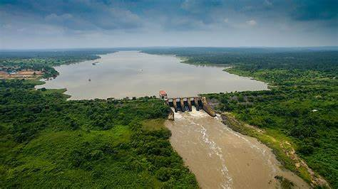

Sustainable Energy🌴
Why Sustainable Energy?
Nigeria is rich in renewable energy potential, yet many communities still face energy challenges. Sustainable energy offers a cleaner, more reliable alternative that reduces environmental impact, enhances energy security, and creates jobs. This site serves as a hub for learning, collaboration, and action in achieving this goal.
Types of Sustainable Energy
- Solar Energy
- Wind Energy
- Hydropower
Nigeria's geographic location near the equator makes it ideal for solar energy generation. The country enjoys abundant sunshine throughout the year, making photovoltaic (PV) systems and solar thermal technologies highly effective.
Applications: Powering homes, businesses, schools, and off-grid areas.
Advantages: Environmentally friendly, cost-effective, reduces reliance on fossil fuels, scalable to meet different needs.
Challenges: Initial installation costs and the need for skilled technicians to maintain systems.
While wind energy is not widely utilized in Nigeria yet, it holds great promise, particularly in regions with consistent winds such as Sokoto and Katsina. Wind turbines convert kinetic energy from the wind into mechanical power, which is then used to generate electricity.
Applications: Utility-scale wind farms or small turbines for local use.
Advantages: Clean, renewable, and requires relatively small land area.
Challenges: Limited wind resources in some parts of Nigeria and high upfront investment costs.
Nigeria is already utilizing hydropower to some extent, with facilities like the Kainji and Shiroro dams. Hydropower harnesses the energy of flowing water to generate electricity, and small-scale systems can bring power to rural and off-grid areas.
Applications: Large dams for urban electricity supply and micro-hydro systems for rural areas.
Advantages: Reliable, renewable, and capable of producing significant power.
Challenges: Environmental impact on aquatic ecosystems and high initial construction costs.
